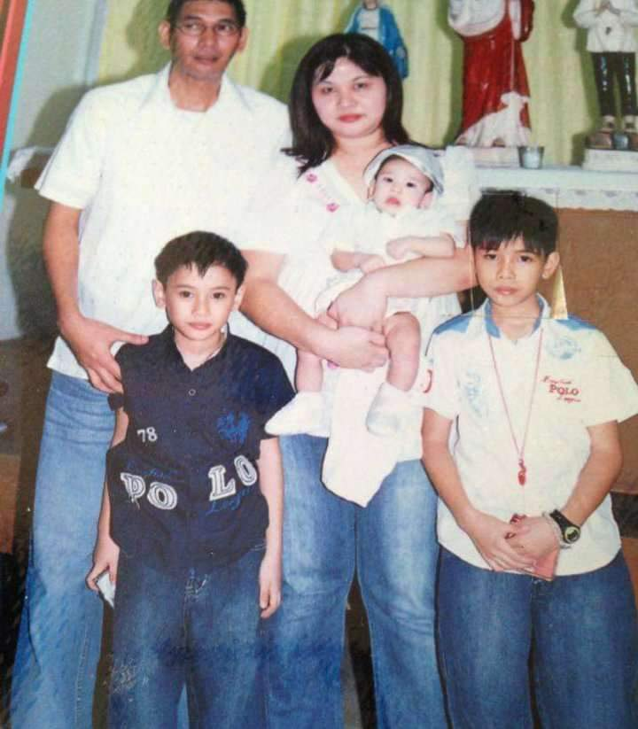

My life is meaningful due to my mom and my dreams. My dream is to make my mom rest easy and not think of a disconnection notice on our doorstep.
We can all find meaning in our life. If you feel down in life, just remember your dreams, even if you tell yourself that life has no purpose. There will always be purpose; you might not find it today nor tomorrow, but someday you’ll find your own purpose in life.
Since I talked about dreams, how can I achieve this? In order for me to achieve my dreams, I need to break it down into smaller, achievable goals. This makes the process less overwhelming and more manageable. I also need to consistently work towards my goals, develop a routine that aligns with my purpose, and stay disciplined.